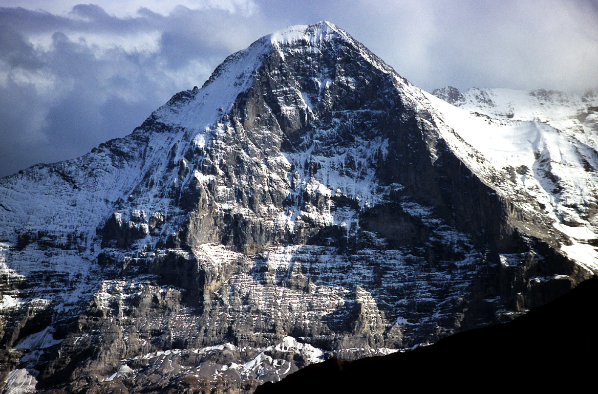
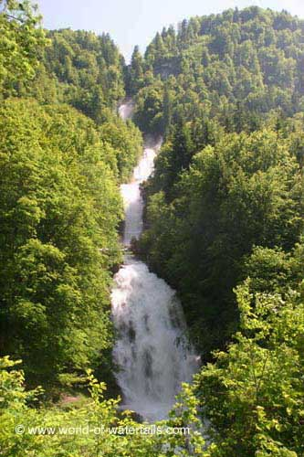
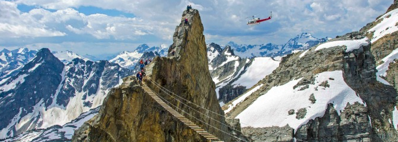
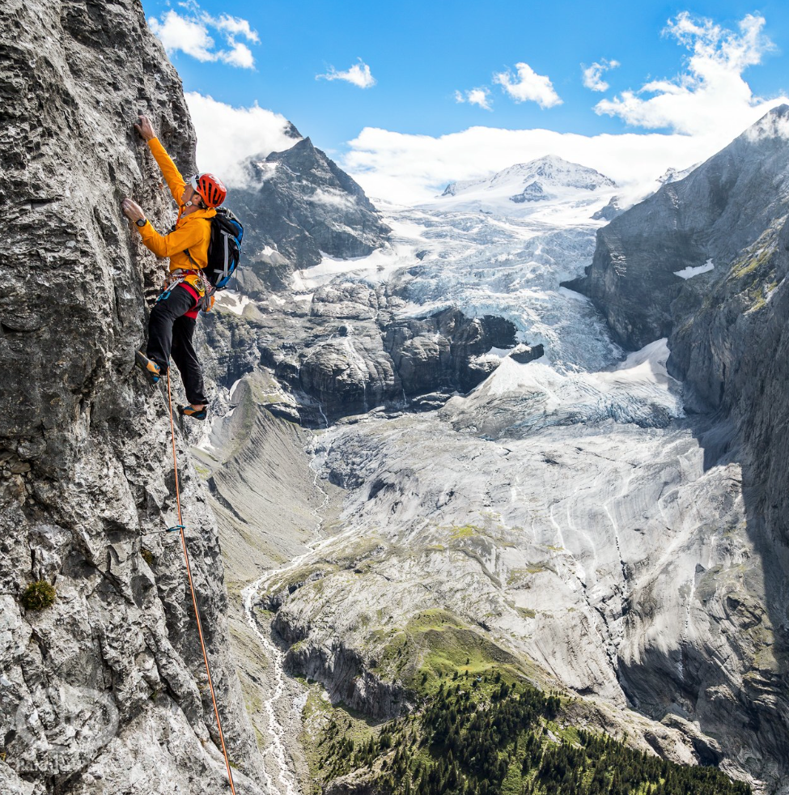
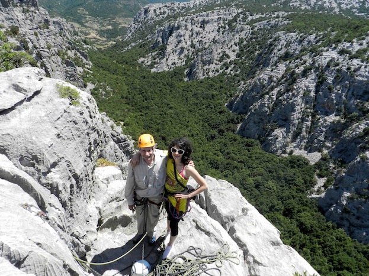

Welcome to ASIC 2017
The Sixteenth Annual Summer Interdisciplinary Conference, held at City Hotel Oberland in Interlaken, Switzerland, July 15–20, 2017.
There are presentation sessions in the evening on each of six days, so attendees should plan to leave no earlier than July 21. The dates were chosen to allow attendance at the Mathematical Psychology annual meeting in Warwick, UK (July 22–25) and the Cognitive Science Society annual meeting in London, UK (July 26–29).
City Hotel Oberland is in the center of Interlaken, with three adjacent buildings, two bars and three restaurants (city-oberland.ch/en). The meetings and catered breaks are held in one of the three hotel buildings. All dinners are held at the hotel, with a banquet on the final night including beer, wine, and some special offerings — the extra cost is included in the registration fee.

The north face of the Eiger, a famous mountain just south of Interlaken
Interlaken is a resort town at an altitude of about 1,800 ft, surrounded by mountains rising to about 13,000 ft. The city lies between the scenic lakes of Thun and Brienz, connected by the river Aare running through town. It is known as the adventure sports capital of Switzerland. Interlaken is a short distance by train, car or bus from a deep valley with two branches: one leads to Grindelwald, a famous mountain resort at the base of the Eiger and Jungfrau, and the other leads to a dramatic adjacent valley containing the towns of Wengen, Lauterbrunnen, and Murren. There is a famous train ride that starts at Interlaken and allows a round trip via one valley and a return via the other, both reaching Kleine Scheidegg where a cog-train climbs steeply via tunnels through the Eiger and eventually reaches the Jungfraujoch at 11,400 ft.
Travel to Interlaken is made easy by the Swiss rail system, by bus, by well-maintained roads, and by several nearby international airports: Bern Belp (~1 hr), Zurich Kloten (~2 hrs), and Basel Mulhouse (~2 hrs).
Richard M. Shiffrin of Indiana University – Bloomington is the organizer. Email correspondence should be directed to shiffrin@indiana.edu (see the Contact tab for all contact info).
About the conference
The subject matter of the ASIC conferences is interdisciplinary, with a primary focus lying in the broad frame of Cognitive Science. ASIC uses the very successful format of previous ASIC and AIC conferences: days are free for leisure activities and discussions among participants. The talks are in the later afternoon/early evening, followed by dinner. The dates have been chosen to make it convenient for attendees to bring family/friends.
Conference aims
The conference covers a wide range of subjects in cognitive science, including:
- modeling of cognition
- neuroscience, cognitive neuroscience
- psychology (including perception, psychophysics, attention, information processing, memory and cognition)
- computer science and artificial intelligence
- machine intelligence and learning
- methodology and statistics
- linguistics, psycholinguistics and computational linguistics
- philosophy of mind, cognitive science
Conference format
There is a single speaking session each day, intentionally organized to maximize the dissimilarity of each day's presentations. If the number of participants exceeds the number of speaking slots (about 42 at 30 minutes each), the organizer will adjust talk duration, the presence of any break, and if necessary choose a subset of attendees to present.
The conference starts with registration and a reception with drinks and food from about 15:30–16:15 on July 15. On subsequent days there are drinks and light snacks from 15:40–16:00. Each of the six days has a presentation session of seven (or more) spoken presentations, followed by a buffet dinner at the hotel. The last evening (July 20) closes with a banquet dinner, so plan to depart no earlier than July 21.
For a listing of other ASIC sites, see the previous ASIC sites page.
Talks & Submissions
Whether or not you have already sent some of this information to the organizer by email, please provide a list of authors, affiliations, emails, a title, and an abstract.
Provide a list of authors (with the presenter indicated), their affiliations, and emails; a title; and an abstract (limit 250 words). These may be changed later, so do not hesitate to send them as early as possible — the organizer uses these to plan the conference and organize the sessions.
If attendance allows regular length talks, these are limited to 30 minutes, a time that includes interruptions for questions and final discussion — plan for about 20–24 minutes of actual speaking. Talks should be aimed not at specialists but at a general scientific audience.
There is room on the program for about 42 30-minute talks. If more than 42 attendees want to present, the organizer will either choose some talks to be of shorter duration, or in extremity, decide which attendees will give presentations. When registering, please indicate if you might be willing to (1) give a shorter talk, or (2) forego giving a talk.
Registration
You are not officially on the request list for presenting research until you register and send the registration fee.

Giessbach Falls
If you have a 5% or greater chance of attending ASIC 2017, list yourself on the "Potential Attendees" page. Once reasonably sure of attending, fill out the registration form and submit your registration fee, which pays for rental of the conference room, conference equipment rentals, catering costs for snacks and drinks at conference breaks and receptions, several other miscellaneous costs, and the final banquet.
Fee schedule (US dollars)
| Timing | To Indiana Conference Bureau |
|---|---|
| Prior to January 1, 2017 | $300 |
| January 1 – March 1, 2017 | $360 |
| After March 1, 2017 | $420 |
In addition to the registration fee per person, you may purchase additional guest vouchers for other persons attending receptions, breaks, and dinners. The fee for guest attendance at breaks only is $15 per day, paid to the Indiana Conference Bureau. The fee for each person not at the hotel who wishes to join the buffet dinner is 30 CHF (60 CHF for the final night banquet), paid directly to the hotel.
Lodging
A block of rooms is held at City Hotel Oberland, Interlaken, Switzerland — an excellent hotel with good restaurants.
Hotel website: city-oberland.ch/en. Lodging rates include breakfast and dinner. Reservations should be made early, starting in fall 2016.
Rates (per attendee, per day)
| One person, single or double room | 175 CHF/day |
|---|---|
| Two persons in a double room | 285 CHF/day |
There are other rates for suites that depend on the ages of children; the hotel provides such rates on request.
Deposit & cancellation
Reservations are made and held with a credit card and a code available from the organizer. No deposit charges are taken until Feb 1, 2017, and cancellations are free of charge if made prior to Feb 1. Reservations made after Feb 1 and prior to April 30 require a 20% deposit (prior reservations assessed this deposit on Feb 1); cancellations in that window are free except for a 20 CHF handling fee. Reservations after April 30 require a 50% deposit; cancellations from April 30 to June 30 are refunded minus 10%. After July 1 payment in full is required, and cancellation until July 6 is allowed at a penalty of 50% of the total.
Parking & internet
Parking at the hotel is very limited (9 spots at most); most attendees are advised to use public parking in town. There is nearby underground parking at 12.50 CHF/day, or check in, obtain a free bus pass, drive to the Ost Train Station and park there at 5 CHF/day, returning by foot (~400 m) or bus. Wireless internet is free in public areas and guest rooms.
Address & telephone
City Hotel Oberland
Höheweg 7, 3800 Interlaken, Switzerland
Phone: +41 (0)33 827 87 87 · Fax: +41 (0)33 827 87 70
Email: bookings@city-oberland.ch
Meals, Dining & Breaks
Breakfast and dinner buffets at the hotel are included in the daily lodging price.
Breakfast is open from 6:30–10:00. Four-course buffet dinners with vegetarian and vegan choices are open at about 20:15–20:30.
Travel
Travel to and around Interlaken and Grindelwald.
It is a good idea to explore the area with Google Maps and Google Earth before you go.
By plane
The main international airports giving the best access to Interlaken are:
- Airport Bern Belp — train time 1 hr 20 min; driving time 45 minutes
- Airport Basel Mulhouse — train time 2 hrs 20 min; driving time 1 hr 55 min
- Airport Zurich Kloten — train time 2 hrs 10 min; driving time 1 hr 45 min
By train
In addition to trains from the airports, the Swiss Rail Network is known for punctual transport from all major cities, with easy access by train from almost all cities in Europe.
By car
Interlaken is easily accessed by the Swiss highway system. It is advisable to check in at the hotel, obtain a free Interlaken bus pass, and drive to and park at the Ost train station (5 CHF/day), returning by foot or bus.
Transport within and between Interlaken and Grindelwald
There is extensive public transportation within Interlaken; a free bus pass for transport within the city is available upon check-in. Grindelwald is 30 minutes distant by car and 50 minutes by train. One of the highlights of any visit is a train that brings visitors high on the Jungfrau (to 3,454 meters elevation), accessible from either Interlaken or Grindelwald.
Activities
The Interlaken/Grindelwald area offers a wide variety of spectacular outdoor activities, ranging from tourism and viewpoints to high adventure.
Hiking
The area is renowned for hiking and offers thousands of venues ranging from simple hikes with little difficulty (including walks along the shores of Brienz and Thun and river Aare) to non-technical but difficult and long climbs to local peaks with dramatic views. For the somewhat adventurous, guided hikes/scrambles to local mountain peaks are offered by attendee and ASIC speaker Professor Harald Atmanspacher from ETH Zurich, a licensed mountain guide.
Via Ferrata

Via Ferrata are paths along and between cliff faces and peaks, protected by cables and ladders affixed to the mountainsides. Users wear a harness and slings with carabiners, providing complete protection in conditions that would otherwise be limited to technical rock climbers. There are quite a few Via Ferrata in the area, highly recommended as somewhat more spectacular alternatives to hiking.
Mountain biking and road biking
There are very large numbers of venues for road biking and mountain biking in the area, giving the same spectacular views offered by hiking and Via Ferrata.
Rock climbing

Although the area is famous for mountaineering (the Eiger, Jungfrau, etc.), there are an uncountable number of excellent rock climbing venues close enough to Interlaken for day climbing, offering single and multi-pitch routes at all levels of difficulty. As usual we offer at least one and probably two group climbing days, where guides set up top ropes on easy climbs and introduce novices, while better climbers move to more challenging climbs in the same area. There is a climbing shop at Kletterhalle Interlaken AG, Jungfraustrasse 44, just 1.5 blocks from the hotel.
Mountaineering
There are numerous accessible peaks near Interlaken and Grindelwald, many reachable in day trips by hiking and/or scrambling. The famous, very high-altitude peaks such as the Eiger and Jungfrau are long, technical, committing, require a guide and ropes, and are generally best attempted on days prior to or after the conference.
Canyoning
Suitable for beginners with no experience but exciting and enjoyable. One wears a wetsuit, enters a stream in a narrow canyon high in the mountains, and descends by walking, scrambling, floating, and sliding; where cliffs are encountered the guide lowers the client on a rope.
Whitewater rafting
Suitable for all ages, though some of the more serious whitewater situations might require older, more experienced rafters.
Parasailing
Tandem parasailing with an expert guide offers a wonderful experience — floating on thermal drafts above the local scenery. Other adventure sports available include skydiving, bungee jumps, and wing suit flying, plus regular lake sports: swimming, sailing, and boating.
Contact
Email is preferred for all correspondence.

Richard and Alissa Shiffrin hanging out in Sardinia
Conference organizer
Rich Shiffrin
Indiana University – Bloomington
shiffrin@indiana.edu
Tel: 812-855-4972 · Fax: 812-855-9871
Webmaster / Conference Coordinator
Ruth Eberle
Phone: (812) 856-5722
reberle@indiana.edu
Postal address
Annual Summer Interdisciplinary Conference (ASIC 2017)
c/o Prof. Richard Shiffrin, Psychological and Brain Sciences Department
Indiana University, 1101 E. 10th St., Bloomington, IN 47405